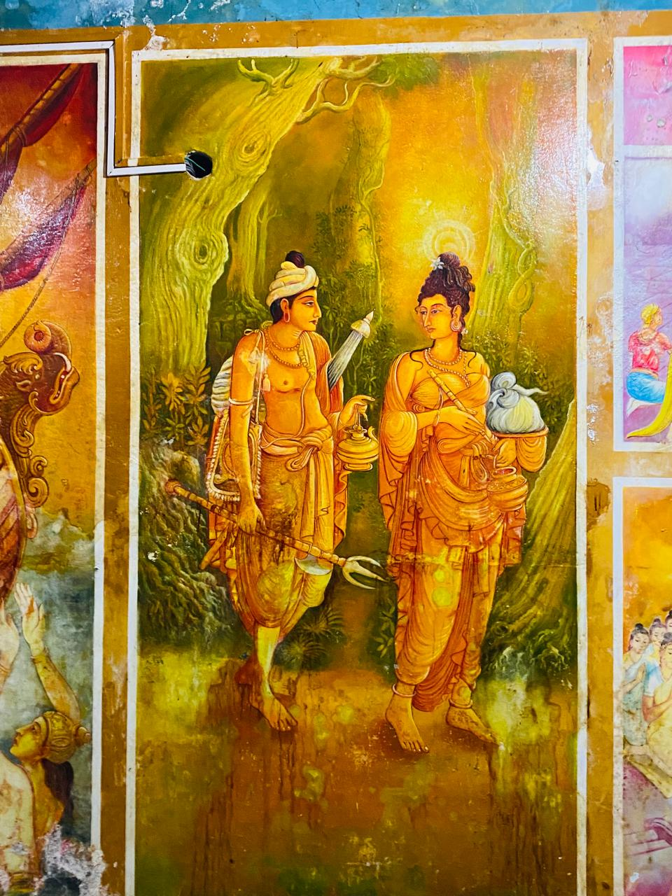
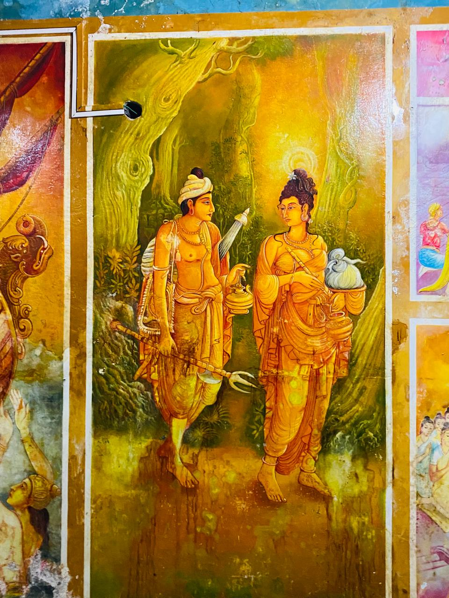

2024.05.22
බෝධි පූජාව
සංවිධානය : සියලුම ගම් වාසීන්
වෙසක් උත්සවයට සමගාමිව පවත්වනු ලබන පිංකම් මාලාවේ සත්වන දින සියලු දෙනාටම ආශිර්වාද කිරීම පිණිස බෝධි පූජා පිංකම පවත්වන ලදී.
2024.05.21
අබතෙල් පූජාව
සංවිධානය : අරඹ ග්රාමය
වෙසක් උත්සවයට සමගාමීව පවත්වනු ලබන පිංකම් මාලාවේ සයවන දින අරඹ ගම්වාසීන් විසින් අබ තෙල් පූජාව පවත්වන ලදී.

2024.05.20
අධිෂ්ඨාන පූජාව
සංවිධානය : තැම්පල ග්රාමය
වෙසක් උත්සවයට සමගාමීව පවත්වනු ලැබූ පිංකම් මාලාවේ පස්වන දින තැම්පල ගම් වාසීන් විසින් අධිෂ්ඨාන පූජාව පවත්වන ලදී. මෙම පුණ්ය කර්මයේදී ලොව්තුරා බුදුරජාණන් වහන්සේ උදෙසා පහන් ආලෝක පූජාවක් පවත්වන ලදී

2024.05.19
තෙසැත්තෑඥාණ පිංකම
සංවිධානය : කුස්වල ග්රාමය
වෙසක් උත්සවයට සමගාමිව පවත්වනු ලබන පිංකම් මාලාවේ සතරවන දින පිංකම ලෙස කුස්වල ගම් වාසීන් විසින් තෙසැත්තෑඥාණ පිංකම පවත්වන ලදී.
වැඩිදුර විස්තර2024.05.18
සත් බුදු පූජාව
සංවිධානය : අරඹ ග්රාමය
වෙසක් උත්සවයට සමගාමිව පවත්වනු ලබන පිංකම් මාලාවේ තෙවැනි දින සත්බුදු වන්දනාමය පිංකම අරඹ ගම්වාසීන් විසින් සංවිධානය කරන ලදී.
2024.05.17
අටවිසි පූජාව
සංවිධානය : තැම්පල ග්රාමය
වෙසක් උත්සවයට සමගාමිව පවත්වනු ලබන පිංකම් මාලාවේ දෙවැනි දින අටවිසි පිංකම තැම්පල ගම් වාසීන් විසින් සංවිධානය කරන ලදී.

2024.05.16
ඖෂධ පුජාව
සංවිධානය : කුස්වල ග්රාමය
වෙසක් උත්සවයට සමගාමිව සහ ප්රතිසංස්කරණය කරන ලද බුද්ධ ප්රතිමාවට ගරු බුහුමන් දැක්වීම සදහා ඖෂධ එකසිය අටකින් යුතු ඖෂධ පුජාවක් පවත්වන ලදී. මෙම පුණ්ය කර්මයේදී ලොව්තුරා බුදුරජාණන් වහන්සේ උදෙසා නිසන්සලාරාම මෙහෙණි ආරාමයේ සිට ශ්රී පුෂ්පාරාම විහාරස්ථානය දක්වා ඖෂධ එකසිය අටකින් යුක්ත පෙරහැරක් පැවැත්වුනි.
2024.05.16
නේත්රා තැබීමේ පිංකම
සංවිධානය : සියලුම ගම්වාසින්
ශ්රී පුෂ්පාරාම විහාරස්ථානයේ වෙසක් උත්සවයට සමගාමිව විහාරස්ථානයේ ඉපැරණි බුදු මැදුර ප්රතිසංස්කරණය කර විවෘත කිරීමේ පිංකම සහ නේත්රා තැබීමේ පිංකමයි. විහාරස්ථානයේ විහාරාධිපති ස්වාමින් වහන්සේගේ පුර්ණ මග පෙන්වීමෙන් හා සියලුම දායක මහත්ම මහත්මීන්ගේ ධන පරිත්යාගයෙන් බුදු මැදුර ප්රතිසංස්කරණය කරමින් විවෘත කරන ලදී.
2024.03.08
කිරි අහාර පුජාව
සංවිධානය : කුලගන සමිතිය
ගරු ස්වාමින් වහන්සේගේ අනුශාසනා පරිදි කැළණිය විහාරස්ථානයට ගොස් පවත්වනු ලැබූ කිරි අහාර පුජාව
2019.01.27
25 වන දහම් පාසල් සංවත්සරය
සංවිධානය : දහම් පාසල
ශ්රී පුෂ්පාරාමය විහාරස්ථානය විසින් පවත්වනු ලබන දහම් පාසල ආරම්භ කර වසර 25ක් පිරීම නිමිත්තෙන් පවත්වනු ලැබූ දහම් පාසල් සංවත්සරය